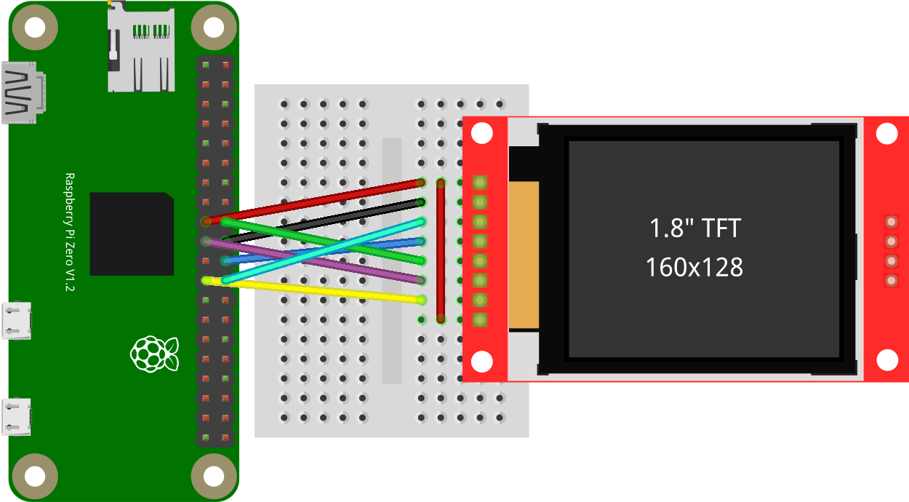

Für eine Anzeige abseits von HDMI und Composite bieten sich günstige SPI TFT LCDs an. Diese gibt es in unterschiedlichen Auflösungen und Größen. Die Einbindung ist über ein Kernelmodul problemlos möglich.
Allgemeines
SPI-Displays sind TFT-LCD-Anzeigen, die über den SPI-Bus an den Raspberry Pi angeschlossen werden können. Sie werden in unterschiedlichsten Auflösungen (128x128, 160x128, 320x240 usw.) und Größen (1,44“ - 2,8“ usw.) angeboten. Es gibt allerdings verschiedenste Kontroller für diese SPI-Displays, die unterschiedlich angesprochen werden. Die Einbindung kann über eine Library und ein Programm erfolgen. Flexibler und einfacher ist allerdings die Einbindung in das Linux-System bzw. in den Kernel. Dazu benötigt man ein Kernel-Modul, das den Kontrolle des Displays unterstützt. Eine Viehlzahl von diesen Display bzw. Displaykontrollern wird vom Modul ‘fbtft_device’ unterstützt. Nach dem Laden wird ein zweiter Framebuffer ‘/dev/fb1’ für das Display erzeugt. ‘/dev/fb0’ ist dabei der Framebuffer des Grafikkarte (also des HDMI- oder Composite-Ausgangs).
Günstige SPI-Displays mit einem unterstützten Kontroller sind z. B.:
| Kontroller | Auflösung | Größe | ca. Preis China |
|---|---|---|---|
| ST7735 (adafruit18) | 128x128 | 1,44” | 3 € |
| ST7735 (sainsmart18) | 160x128 | 1,8” | 4 € |
| ILI9341 | 320x240 | 2,2-2,8” | 8 € |
Ein Problem stellt die Framerate dar, weil der SPI-Bus des Controllers nur eine limitierte Übertagungsrate unterstützt. Bei den kleinen Displays sind dann durchaus 30 FPS (Bilder pro Sekunde) möglich. Bei 320x240 sind bei der Raspberry Pi Zero allerdings nur 10-20 FPS möglich.
Die theoretische minimale nötige Übertragungsrate bzw. SPI-Taktfrequenz kann man sich für 25 FPS und 16 Bit Farben leicht berechnen. Bei einer Auflösung von 160x128 ergibt sich eine Übertragungsrate von min. 8 MBit/s (8 MHz). Bei 320x240 allerdings bereits 41 MBit/s (41 MHz).
Im Test lag die maximale SPI-Taktfrequenz des ST7735-Controllers bei 64 MHz und beim ILI9341-Controller bei 82 MHz.
Kontakte
Zur Ansteuerung des Displays werden folgende Kontakte bzw. GPIOs verwendet:
VCC … Versorgung (meist 5 oder 3,3 V)
VLED … Versorgung Hintergrundbeleuchtung (optional, meist 3,3 V)
GND … Masse
MOSI … Datenleitung
CLK … SPI-Takt
CS … SPI Slave Aktivierung
RESET … Reset
DC/A0/RS … Umschaltung Befehl oder Daten Übertagung
Die Kontakte CS, RESET und DC/A0/RS können über Kernel Parameter frei zugewiesen werden. Wobei CS typischerweise auf CS0 gesetzt wird. RESET wird auf GPIO25 und DC/A0/RS auf GPIO24. MOSI und CLK werden auf die entsprechenden SPI-Bus Anschlüsse verbunden.

Einbindung / Aktivierung
Das Kernel Modul ‘fbtft_device’ unterstützt viele Parameter:
name … Namen des Displays (dahinter ist der Controller, Auflösung und weitere Parameter hinterlegt)
gpios … gibt die GPIO-Nummer (BCM) für die angegebenen Anschlusse an (reset, dc, cs)
rotate … Drehung des Displays
speed … SPI-Takt
fps … Bilder pro Sekunde (wird möglicherweise nicht erreicht)
debug … Debugmodus, (Wert 32 bzw. $((1<<5)) protokolliert erreichte FPS, daher nur für kurze Tests aktivieren!)
Mit folgenden Anruf können alle unterstützen Displays aufgelistet werden
sudo modprobe fbtft_device name=list; dmesg | tail -30
adafruit18 adafruit18_green adafruit22 adafruit22a adafruit28 adafruit13m admatec_c-berry28 agm1264k-fl dogs102 er_tftm050_2 er_tftm070_5 ew24ha0 ew24ha0_9bit flexfb flexpfb freetronicsoled128 hx8353d hy28a hy28b ili9481 itdb24 itdb28 mi0283qt-2 mi0283qt-9a mi0283qt-v2 nokia3310 nokia3310a nokia5110 piscreen pitft pioled rpi-display s6d02a1 sainsmart18 sainsmart32 sainsmart32_fast sainsmart32_latched sainsmart32_spi spidev ssd1331 tinylcd35 tm022hdh26 tontec35_9481 tontec35_9486 upd161704 waveshare32b waveshare22
TFT-LCD sainsmart18 (ST7735, 160x128, 1,8“)
Konsole Beispielaufruf:
sudo modprobe fbtft_device name=sainsmart18 gpios=reset:25,dc:24,cs:8 rotate=90 fps=30 speed=48000000 debug=$((1<<5))
Einbindung für automatische Aktivierung bei Systemstart:
”/etc/modules-load.d/fbtft.conf”:
spi-bcm2835
fbtft dma
fbtft_device
”/etc/modprobe.d/fbtft.conf”:
options fbtft_device name=sainsmart18 gpios=reset:25,dc:24,cs:8 rotate=90 fps=30 speed=48000000
TFT-LCD adafruit18 (ST7735, 128x128, 1,44“)
Konsole Beispielaufruf:
sudo modprobe fbtft_device name=adafruit18_green gpios=reset:25,dc:24,cs:8 rotate=90 fps=30 bgr=1 speed=40000000 debug=$((1<<5))
”/etc/modules-load.d/fbtft.conf”:
spi-bcm2835
fbtft dma
fbtft_device
”/etc/modprobe.d/fbtft.conf”:
options fbtft_device name=adafruit18_green gpios=reset:25,dc:24,cs:8 speed=40000000 bgr=1 fps=30 height=128 width=128 rotate=90
TFT-LCD WaveShare (ST7735, 128x128, 1,44“)
Konsole Beispielaufruf:
sudo modprobe fbtft_device name=adafruit18_green gpios=reset:27,dc:25,cs:8,led:24 height=128 width=128 rotate=180 fps=30 bgr=1 speed=40000000 debug=$((1<<5))
”/etc/modules-load.d/fbtft.conf”:
spi-bcm2835
fbtft dma
fbtft_device
”/etc/modprobe.d/fbtft.conf”:
options fbtft_device name=adafruit18_green gpios=reset:27,dc:25,cs:8,led:24 height=128 width=128 rotate=180 fps=30 bgr=1 speed=40000000
Verwendung
Die Verwendung wird in einem eigenen Eintrag besprochen …
Verlinkungen
Alle relevanten Informationen werden auf der Projektseite https://github.com/notro/fbtft/wiki/fbtft_device beschrieben.